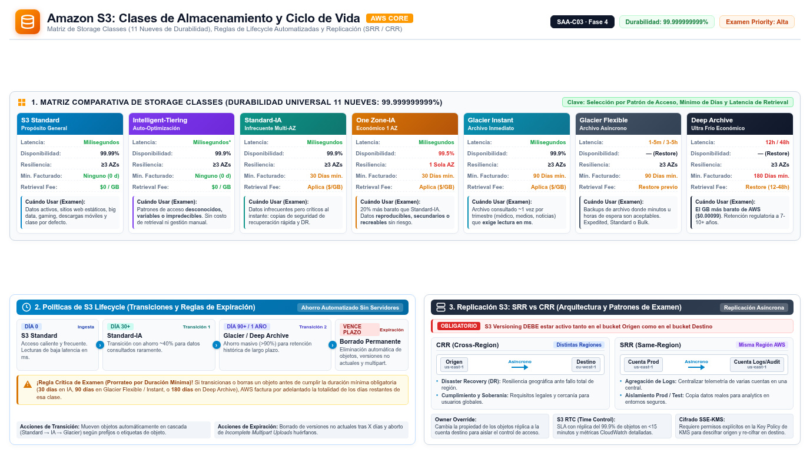

S3 y Glacier Amazon Simple Storage Service
El servicio de almacenamiento que más preguntas genera en el examen SAA-C03: storage classes, lifecycle, versioning, replicación y cifrado son decisiones de arquitectura que caen en los cuatro dominios.
Amazon S3 es object storage: un almacén de objetos identificados por una clave dentro de un bucket. Piénsalo como un depósito de contenedores gigante y sin ventanilla: tú entregas una caja etiquetada (el objeto) con su etiqueta única (la key), el depósito la guarda en varias naves repartidas por la región (múltiples Availability Zones) y te la devuelve en milisegundos cuando la pides. No hay jerarquía real de carpetas — los "directorios" son solo prefijos dentro del nombre de la clave — y no hay límite práctico de capacidad: puedes guardar desde un archivo de 0 bytes hasta objetos de 5 TB, en cualquier cantidad.
La cifra que el examen espera que recites de memoria es la durabilidad: 99.999999999% (once nueves), verificada en la documentación oficial para las storage classes. Lo importante para diseñar es que esa durabilidad es la misma en casi todas las clases: lo que cambia entre ellas es el precio, la disponibilidad y la velocidad de recuperación (retrieval). Esa distinción — durabilidad vs disponibilidad vs costo — es exactamente lo que el examen evalúa cuando te presenta un escenario de datos fríos, datasets públicos o retenciones regulatorias.

Storage classes: la tabla más citada del examen
Toda la familia de clases comparte el mismo diseño de durabilidad de once nueves, pero se diferencia en disponibilidad, número de AZs, costo por GB y — crítico en las clases de archivo — en cuánto tiempo y a qué precio puedes recuperar los datos. Las clases infrequent access cobran una tarifa por GB recuperado y una duración mínima de almacenamiento: si expiras un objeto antes de esos 30 o 90 días, pagas igual la duración completa. Las clases Glacier requieren además un paso previo de restore antes de poder leer el objeto, salvo Glacier Instant Retrieval, que se lee directamente en milisegundos pagando un recargo por retrieval.
| Clase | Durabilidad | Disponibilidad | AZs | Retrieval | Duración mín. | Cuándo usarla |
|---|---|---|---|---|---|---|
| S3 Standard | 11 nueves | 99.99% | ≥3 | ms, sin recargo | — | Acceso frecuente; clase por defecto |
| Intelligent-Tiering | 11 nueves | 99.9% | ≥3 | ms, sin recargo | — | Patrones desconocidos o cambiantes; monitoreo por objeto y movimientos automáticos de tier |
| Standard-IA | 11 nueves | 99.9% | ≥3 | ms, con recargo | 30 días | Datos consultados raramente pero que deben estar disponibles al instante |
| One Zone-IA | 11 nueves | 99.5% | 1 | ms, con recargo | 30 días | Datos fríos reproducibles o reconstruibles; aceptas el riesgo de AZ única |
| Glacier Instant Retrieval | 11 nueves | 99.9% | ≥3 | ms, con recargo | 90 días | Archivo consultado ~una vez por trimestre; ms de latencia |
| Glacier Flexible Retrieval | 11 nueves | — | ≥3 | 1–5 min a 5–12 h según modo | 90 días | Archivo con consultas esporádicas; pagas menos almacenamiento |
| Glacier Deep Archive | 11 nueves | — | ≥3 | 12 h estándar, 48 h bulk | 180 días | Retención regulatoria de 7+ años; el GB más barato de AWS |
Dos notas que la documentación oficial subraya. Primera: Reduced Redundancy Storage (RRS) existe, pero AWS recomienda no usarla — S3 Standard es más rentable y RRS asume una pérdida esperada del 0.01% anual de objetos. Segunda: S3 Express One Zone es la clase de alto rendimiento de una sola AZ, con acceso hasta 10 veces más rápido y requests un 50% más baratos que S3 Standard, pensada para las cargas más sensibles a latencia; no la confundas con One Zone-IA, que es la clase fría de AZ única.
S3 Lifecycle: el ahorro automatizado
Una lifecycle configuration es un conjunto de reglas que S3 aplica por ti a grupos de objetos. Hay dos tipos de acciones: transition actions, que mueven objetos a clases más baratas (por ejemplo, Standard-IA a los 30 días y Glacier Flexible Retrieval al año), y expiration actions, que borran objetos vencidos en tu nombre, típicamente logs o datos temporales que una política de retención fija. Es la respuesta estándar del examen a "minimize storage costs over time without manual work": en vez de scripts o cron jobs, defines la política una vez y S3 la ejecuta para siempre.
Cuidado con los costos ocultos de las transiciones: cada movimiento genera un cargo por request de transición, y si expiras objetos antes de la duración mínima de la clase destino (30 días en IA, 90 o 180 días en Glacier), se te cobra la duración completa igualmente. La documentación oficial también advierte que conviene alinear las reglas con esos mínimos para no pagar doble. Un patrón común y seguro es la escalera: Standard → Standard-IA a los 30 días → Glacier Flexible al año → Deep Archive si la retención es plurianual.
Versioning y replication: contra el borrado y contra la región entera
S3 Versioning mantiene múltiples variantes de un objeto en el mismo bucket: cada escritura crea una nueva versión y nunca se pisa la anterior. Si borras un objeto, S3 inserta un delete marker en lugar de eliminarlo físicamente, y puedes restaurar cualquier versión anterior. Es la primera capa de protección contra acciones humanas erróneas y fallos de aplicación, y está deshabilitado por defecto: el examen espera que sepas que hay que activarlo explícitamente, y que puede reforzarse con MFA Delete para exigir MFA al borrar versiones. Además, versioning es prerrequisito de la replicación: sin versioning no hay CRR ni SRR.
S3 Replication copia objetos automáticamente y de forma asíncrona entre buckets — del mismo dueño o de cuentas distintas. La Cross-Region Replication (CRR) replica a otra región y responde a tres motivos de la documentación oficial: compliance que exige distancia geográfica, menor latencia para usuarios remotos y eficiencia operativa para procesar los mismos datos en dos regiones. La Same-Region Replication (SRR) replica dentro de la región y sirve para agregar logs en un bucket único, replicar entre cuentas de producción y pruebas, o satisfacer leyes de soberanía de datos. Si necesitas un plazo garantizado, S3 Replication Time Control (RTC) ofrece SLA de replicar el 99.99% de los objetos nuevos en menos de 15 minutos. Y si necesitas replicar objetos que ya existían antes de configurar la regla, la respuesta es S3 Batch Replication, no live replication.
versionado, 3 AZ"] end SRC -->|"CRR asíncrona"| DST["Bucket réplica
Región B"] SRC -.->|"RTC: 15 min con SLA"| DST classDef navy fill:#EFF6FF,stroke:#3B82F6,stroke-width:2px,color:#1E293B classDef green fill:#F0FDF4,stroke:#10B981,stroke-width:2px,color:#1E293B classDef amber fill:#FFF7ED,stroke:#F59E0B,stroke-width:2px,color:#1E293B class APP navy class SRC green class DST amber
Cifrado: SSE-S3, SSE-KMS y SSE-C
Las tres opciones de server-side encryption cifran en descanso con AES-256; lo que cambia es quién posee y controla la clave de cifrado, y eso determina la auditabilidad y el control de acceso. Con SSE-S3, S3 gestiona las claves por completo — es la opción por defecto para los objetos nuevos y la más simple, sin permisos extra. Con SSE-KMS, la clave vive en AWS KMS y puede ser una AWS managed key o una customer managed key: ganas registro de uso de la clave en CloudTrail y control granular de quién puede descifrar, a costa de que cada lectura consume cuota de KMS (un límite de requests que puede afectar el rendimiento de cargas intensivas). Con SSE-C, el cliente envía su propia clave en cada request — solo sobre HTTPS — y AWS no la almacena: el control total es tuyo, y también la responsabilidad de no perderla.
| Método | Quién gestiona la clave | Punto fuerte | Vigilar |
|---|---|---|---|
| SSE-S3 | Amazon S3, AES-256 | Simplicidad total; cifrado por defecto de los objetos nuevos | Sin control ni auditoría de uso de claves |
| SSE-KMS | AWS KMS — clave gestionada o propia | Auditoría en CloudTrail y permisos por clave | Consumo de cuota KMS en cargas de alto throughput |
| SSE-C | El cliente la entrega en cada request | Control total de la clave, AWS nunca la retiene | Solo HTTPS; pierdes la clave, pierdes el dato |
| Client-side | El cliente cifra antes de subir | AWS nunca ve datos en claro | Gestionas SDK de cifrado y claves tú mismo |
Rendimiento: prefixes, multipart y byte-range
S3 escala solo hasta miles de requests por segundo, pero hay números de diseño que el examen cita literalmente: por cada prefijo, S3 sostiene al menos 3,500 requests de escritura (PUT/COPY/POST/DELETE) y 5,500 de lectura (GET/HEAD) por segundo, y el número de prefijos por bucket es ilimitado. La estrategia de horizontal scaling es repartir las claves entre varios prefijos para paralelizar: la documentación da el ejemplo de que 10 prefijos de lectura escalan a 55,000 GET por segundo. Mientras S3 escala gradualmente hacia esa nueva tasa puedes ver errores 503 Slow Down, que se disipan solos al completarse el escalado.
Para objetos grandes, multipart upload divide el archivo en partes que se suben en paralelo — acelera la subida y permite reintentar solo la parte fallida, por lo que es obligatorio para objetos de más de 5 GB y recomendable a partir de 100 MB. En lectura, el byte-range fetch descarga rangos de bytes en paralelo, útil para extraer cabeceras o fragmentos de archivos de gran tamaño. Si además necesitas latencias de milisegundo consistentes o transferencias largas más rápidas, la guía oficial de rendimiento recomienda poner CloudFront o ElastiCache delante de S3, o usar S3 Transfer Acceleration, que aprovecha las edge locations de CloudFront para acelerar el transporte geográfico.
Eventos, sitio web estático y Requester Pays
S3 Event Notifications publica notificaciones cuando ocurren eventos como s3:ObjectCreated o s3:ObjectRemoved, con destinos en SNS, SQS y Lambda — el patrón serverless por excelencia para procesar uploads al instante. Es la respuesta del examen a "trigger a process when a file is uploaded". Static website hosting convierte un bucket en un sitio web servido desde el endpoint del bucket, con documentos de índice y de error configurables: perfecto para contenido estático y scripts de cliente, y aún mejor combinado con CloudFront y Route 53 para dominio propio y HTTPS. Finalmente, un bucket Requester Pays invierte quién paga: el dueño siempre paga el almacenamiento, pero el solicitante autenticado paga el request y la descarga — el patrón para publicar datasets grandes (directorios de códigos postales, datos geoespaciales, crawls web) sin financiar el tráfico de terceros.
| Si el enunciado dice… | La respuesta apunta a… |
|---|---|
| "minimize cost for data accessed once a quarter, milliseconds needed" | S3 Glacier Instant Retrieval |
| "automatically move data to the cheapest tier" | S3 Intelligent-Tiering o S3 Lifecycle |
| "protect against accidental deletion and overwrite" | S3 Versioning — opcional con MFA Delete |
| "compliance: replicate to a distant Region" | CRR — con RTC si exigen 15 minutos |
| "replicate existing objects" | S3 Batch Replication |
| "require encryption key usage logs" | SSE-KMS |
| "achieve higher request rates on a bucket" | Paralelizar con múltiples prefixes |
| "share a large public dataset but not pay for downloads" | Requester Pays |
- Once nueves de durabilidad en todas las clases: lo que varía es disponibilidad, costo y retrieval.
- Glacier Instant = ms; Flexible = minutos a horas; Deep Archive = 12 h estándar y 48 h bulk.
- Lifecycle = transiciones + expiración automáticas; respeta duraciones mínimas (30/90/180 días).
- Versioning inserta delete markers y es prerrequisito de CRR/SRR; RTC da SLA de 15 minutos.
- SSE-KMS cuando pidan auditoría de claves; ojo con los KMS limits en cargas intensivas.
- 3,500 writes / 5,500 reads por prefijo; multipart upload y byte-range para objetos grandes.
- Eventos → SNS/SQS/Lambda; hosting estático con CloudFront para HTTPS y dominio propio.
- Requester Pays: el dueño paga almacenamiento, el solicitante paga request y descarga.
- STG-01 Amazon S3 User Guide — Welcome · docs.aws.amazon.com/AmazonS3/latest/userguide/Welcome.html
- STG-02 S3 — Storage classes (Standard, IA, One Zone, Glacier, Intelligent-Tiering) · docs.aws.amazon.com/AmazonS3/latest/userguide/storage-class-intro.html
- STG-03 S3 — Managing lifecycle (transitions, expiration) · docs.aws.amazon.com/AmazonS3/latest/userguide/object-lifecycle-mgmt.html
- STG-04 S3 — Protecting data with server-side encryption (SSE-S3, SSE-KMS, SSE-C) · docs.aws.amazon.com/AmazonS3/latest/userguide/protecting-data-encryption.html
- STG-05 S3 — Replication (CRR, SRR, RTC, Batch) · docs.aws.amazon.com/AmazonS3/latest/userguide/replication.html
- STG-06 S3 — Versioning (delete markers, MFA Delete) · docs.aws.amazon.com/AmazonS3/latest/userguide/Versioning.html
- STG-07 S3 — Event notifications (SQS, SNS, Lambda) · docs.aws.amazon.com/AmazonS3/latest/userguide/EventNotifications.html
- STG-08 S3 — Performance guidelines (prefixes, multipart, byte-range) · docs.aws.amazon.com/AmazonS3/latest/userguide/optimizing-performance.html
- STG-09 S3 — Website hosting (static hosting) · docs.aws.amazon.com/AmazonS3/latest/userguide/WebsiteHosting.html
- STG-10 S3 — Requester Pays buckets · docs.aws.amazon.com/AmazonS3/latest/userguide/RequesterPaysBuckets.html
- STG-11 S3 Glacier — Storage classes (Instant, Flexible, Deep Archive) · docs.aws.amazon.com/amazonglacier/latest/dev/introducing-storage-classes.html